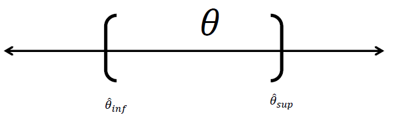

Taller intervalos de confianza
Una estimación por intervalo de un parámetro \(\theta\) de la población es un intervalo de la forma:
\[\Large \hat \theta_{inf}<\theta<\hat \theta_{sup}\] Donde los valores estimados dependen del valor estimado de \(\theta\) y de la distribución de muestreo.

La inferencia estadística consiste en aquellos métodos por medio de los cuales se realizan inferencias o generalizaciones acerca de una población.
Nivel de confianza:
Probabilidad máxima con la que se asegura que un parámetro a estimar se encuentra dentro de un intervalo estimado.
Nivel de significancia:
Máximo error que se comete en la estimación usualmente se denota como \(\alpha\).
\[\Large NC+\alpha=1\] Si se construyen 100 intervalos de la forma \(\hat \theta_{inf}<\theta<\hat \theta_{sup}\) con un NC=0.97 entonces se espera que 97 de los 100 intervalos contengan el parámetro \(\theta\)
Si \(\bar x\) es la media de una muestra aleatoria de tama√±o ùëõ de una poblaci√≥n normal con varianza \(\sigma^2\) conocida, un intervalo de confianza del 1 − ùõº 100% para ùúá está dado por:
\[\Large \bar x-Z_{\alpha/2} \frac{\sigma}{\sqrt n} \leq \mu \leq \bar x+Z_{\alpha/2} \frac{\sigma}{\sqrt n}\]
donde \(Z_{\alpha/2}\) es el valor z que deja un área de ùõº/2 a la derecha.
Ejemplo Una muestra aleatoria de 110 relámpagos dieron por resultado una duración de eco de radar promedio muestral de 0.81 segundos y una desviación estándar de 0.34 segundos. Calcule un intervalo de confianza de 95% para la duración de eco promedio e interprete el intervalo resultante
##
## One-sample z-Test
##
## data: Summarized x
## z = 24.986, p-value < 2.2e-16
## alternative hypothesis: true mean is not equal to 0
## 95 percent confidence interval:
## 0.7464624 0.8735376
## sample estimates:
## mean of x
## 0.81Intervalo de confianza para la media con varianza conocida
Si \(\bar x\) es la media de una muestra aleatoria de tama√±o ùëõ de una poblaci√≥n normal con varianza \(\sigma^2\) desconocida, un intervalo de confianza del 1 − ùõº 100% para ùúá está dado por:
\[\Large \bar x-t_{\alpha/2} \frac{s}{\sqrt n} \leq \mu \leq \bar x+t_{\alpha/2} \frac{s}{\sqrt n}\]
donde \(Z_{\alpha/2}\) es el valor z que deja un área de ùõº/2 a la derecha.
Ejemplo Se tienen los datos de las horas de ejercicio que hacen 10 adolescentes por semana, calcule un intervalo de confianza para el tiempo promedio con un NC del 90%
## [1] 2.71 1.94 2.36 1.54 8.63 0.14 0.14 0.00 0.00 5.08##
## One Sample t-test
##
## data: x
## t = 2.5824, df = 9, p-value = 0.02958
## alternative hypothesis: true mean is not equal to 0
## 90 percent confidence interval:
## 0.6539884 3.8540116
## sample estimates:
## mean of x
## 2.254Si \(\hat p\) es la proporci√≥n de √©xitos en una muestra aleatoria de tama√±o ùëõ, un intervalo de confianza aproximado de (1‚àíùõº) 100% para ùëù está dado por
\[\Large \hat p-Z_{\alpha/2} \sqrt{\frac{\hat p(1-\hat p)}{n}}\leq p \leq \hat p+Z_{\alpha/2} \sqrt{\frac{\hat p(1-\hat p)}{n}} \]
donde \(ùëç_{ùõº/2}\) es el valor z que deja un área de ùõº/2 a la derecha. Nota: usar solo cuando ùëõùëù‚â•50 y ùëõ(1 ‚àíùëù)≥50
EJEMPLO Se seleccionó una muestra de 487 mujeres no fumadoras de peso normal (que había dado a luz). 7.2% de estos nacimientos dieron por resultado niños con bajo peso al nacer (menos de 2500 g). Calcule un intervalo de confianza con un nivel de confianza del 93% para la proporción de todos esos nacimientos que dieron por resultado niños de bajo peso al nacer.
##
## 1-sample proportions test with continuity correction
##
## data: 72 out of 1000, null probability 0.5
## X-squared = 731.02, df = 1, p-value < 2.2e-16
## alternative hypothesis: true p is not equal to 0.5
## 93 percent confidence interval:
## 0.05809659 0.08879847
## sample estimates:
## p
## 0.072Intervalo de confianza para la proporción
Si \(ùë†^2\) es la varianza de una muestra aleatoria de tama√±o ùëõ de una poblaci√≥n normal, un intervalo de confianza aproximado de (1‚àíùõº) 100% para \(ùúé^2\) está dado por
\[\Large \frac {(n−1)ùë†^2}{\chi^2_{ \frac {ùõº} {2},ùëõ‚àí1} } <ùúé^2<\frac {(n−1)ùë†^2}{\chi^2_{1- \frac {ùõº} {2},ùëõ‚àí1} }\]
donde los denominadores son obtenidos de una chi-cuadrada. Nota: un intervalo de confianza para ùúé se puede obtener tomando ra√≠z cuadrada en los l√≠mites del intervalo anterior.
Ejemplo Se tienen los datos de las horas de ejercicio que hacen 10 adolescentes por semana, calcule un intervalo de confianza para la varianza del tiempo con un NC del 98%.
## [1] 2.71 1.94 2.36 1.54 8.63 0.14 0.14 0.00 0.00 5.08##
## Results of Hypothesis Test
## --------------------------
##
## Null Hypothesis: variance = 1
##
## Alternative Hypothesis: True variance is not equal to 1
##
## Test Name: Chi-Squared Test on Variance
##
## Estimated Parameter(s): variance = 7.618471
##
## Data: x
##
## Test Statistic: Chi-Squared = 68.56624
##
## Test Statistic Parameter: df = 9
##
## P-value: 5.813905e-11
##
## 95% Confidence Interval: LCL = 3.60443
## UCL = 25.39124Intervalo de confianza para la varianza
Si el intervalo contiene el cero significa que hay igualdad entre medias
Si\(\bar x_1\) y \(\bar x_2\)son las medias muestrales aleatorias independientes de tama√±o \(n_1\) y \(n_2\) de poblaciones normales con varianzas conocidas \(\sigma_1\) y \(\sigma_2\) respectivamente, un intervalo de confianza de 1-ùõº 100 para \(\mu_1-\mu_2\) está dado por:
\[\Large (\bar x_1-\bar x_2)-Z_{\frac{\alpha}{2}}\sqrt{\left( \frac{\sigma_1^2}{n_1}\right)+\left( \frac{\sigma_2^2}{n_2}\right)}<\mu_1-\mu_2< (\bar x_1-\bar x_2)+Z_{\frac{\alpha}{2}}\sqrt{\left( \frac{\sigma_1^2}{n_1}\right)+\left( \frac{\sigma_2^2}{n_2}\right)}\]
Si\(\bar x_1\) y \(\bar x_2\)son las medias muestrales aleatorias independientes de tama√±o \(n_1\) y \(n_2\) de poblaciones normales con varianzas iguales pero desconocidas $_1\(2ùë¶\)_2$ respectivamente, un intervalo de confianza de (1-ùõº)100% para \(\mu_1-\mu_2\) está dado por:
\[\Large (\bar x_1-\bar x_2)-t_{\frac{\alpha}{2},v}S_p\sqrt{\left( \frac{1}{n_1}\right)+\left( \frac{1}{n_2} \right)}<\mu_1-\mu_2< (\bar x_1-\bar x_2)+ t_{\frac{\alpha}{2},v}S_p\sqrt{\left( \frac{1}{n_1}\right)+\left( \frac{1}{n_2}\right)}\] \[v=n_1-n_2-2\]
\[S^2_p=\frac{(n_1)S_1^2+(n_2)S_2^2}{n_1+n_2-2}\]
Intervalo de confianza para la diferencia de medias con varianzas iguales
Si\(\bar x_1\) y \(\bar x_2\)son las medias muestrales aleatorias independientes de tama√±o \(n_1\) y \(n_2\) de poblaciones normales con varianzas iguales pero desconocidas $_1\(2ùë¶\)_2$ respectivamente, un intervalo de confianza de (1-ùõº)100% para \(\mu_1-\mu_2\) está dado por:
\[\Large (\bar x_1-\bar x_2)-t_{\frac{\alpha}{2},v}\sqrt{\left( \frac{S_1^2}{n_1}\right)+\left( \frac{S_2^2}{n_2} \right)}<\mu_1-\mu_2< (\bar x_1-\bar x_2)+ t_{\frac{\alpha}{2},v}\sqrt{\left( \frac{S_1^2}{n_1}\right)+\left( \frac{S_2^2}{n_2} \right)}\] \[v=\frac{\left( \left( \frac{S_1^2}{n_1}\right)+\left( \frac{S_2^2}{n_2} \right) \right) ^2}{\frac{\left( \frac{S_1^2}{n_1}\right)^2}{n_1-1}+\frac{\left( \frac{S_1^2}{n_1}\right)^2}{n_2-1}}\]
Intervalo de confianza para la diferencia de medias con varianzas desconocidas y diferentes
Entre los diferentes usos que se le da a este intervalo de confianza el principal consiste en determinar si hay igualdad entre dos varianzas, esto se afirma si el intervalo contiene al 1, de contenerlo se dice que hay evidencia de que las varianzas poblacionales son iguales.
\[\Large \frac{S_1^2}{S_2^2}f_{\frac{\alpha}{2},n_2-1,n_1-1}<\frac{\sigma_1^2}{\sigma_2^2}<\frac{S_1^2}{S_2^2}*f_{1-\frac{\alpha}{2},n_2-1,n_1-1}\]
Intervalo de confianza para la razón de varianzas
EJEMPLO
Se realizó una prueba para comparar un método nuevo con el método estándar. Se entrenaron dos grupos de 9 nuevos empleados cada grupo durante un período de un mes; Se midió el tiempo en minutos que necesito cada empleado en armar cierto dispositivo al final del período de entrenamiento; los resultados obtenidos fueron:
Admitiendo que el tiempo de armado utilizado en ambos métodos son variables aleatorias independientes y distribuidas normalmente:
##
## F test to compare two variances
##
## data: E and N
## F = 1.2205, num df = 8, denom df = 8, p-value = 0.7849
## alternative hypothesis: true ratio of variances is not equal to 1
## 95 percent confidence interval:
## 0.2753114 5.4109136
## sample estimates:
## ratio of variances
## 1.220527¿Se puede aceptar la hipótesis de igualdad de tiempos de armado, en función de los datos y con un nivel de confianza del 95%?
## Warning in if (paired) xok <- yok <- complete.cases(x, y) else {: the
## condition has length > 1 and only the first element will be used## Warning in if (paired) {: the condition has length > 1 and only the first
## element will be used## Warning in if (paired) "Paired t-test" else "One Sample t-test": the
## condition has length > 1 and only the first element will be used## Warning in if (paired) "mean of the differences" else "mean of x": the
## condition has length > 1 and only the first element will be used##
## Paired t-test
##
## data: E and N
## t = 2.9938, df = 8, p-value = 0.01723
## alternative hypothesis: true difference in means is not equal to 0
## 95 percent confidence interval:
## 0.8423999 6.4909334
## sample estimates:
## mean of the differences
## 3.666667\(\bar p_x\) y \(\bar p_y\)son las proporciones de √©xito de dos muestras aleatorias independientes de tama√±o \(n_1\) y \(n_2\), entonces un intervalo de confianza de (1 ‚àíùõº) 100% para \(ùëù1‚àíùëù2\) está dado por:
\[\Large (\bar p_x-\bar p_y)-Z_{\frac{\alpha}{2}}\sqrt{\frac{p_x q_x}{n_x}+ \frac{p_y q_y}{n_y}}<p_x-p_y<(\bar p_x-\bar p_y)+Z_{\frac{\alpha}{2}}\sqrt{\frac{p_x q_x}{n_x}+ \frac{p_y q_y}{n_y}}\] Si el intervalo contiene el cero significa que hay igualdad entre medias
Intervalo de confianza para la diferencia de proporciones
Ejemplo Dos grupos son considerados en un grupo sobre la efectividad de una nueva vacuna. El primer grupo, que recibe la vacuna contiene 200.745 individuos. El Segundo grupo, que recibe un placebo consiste de 201.229 individuos. Hubo 57 casos de enfermedad en el primer grupo y 142 casos en el segundo grupo. se desea saber si la vacuna es o no eficiente, use un intervalo de confianza con un nivel de significancia \(\alpha=0.05\) para conocer las relaciones entre las proporciones p1 y p2.
##
## 2-sample test for equality of proportions with continuity
## correction
##
## data: x out of n
## X-squared = 35.273, df = 1, p-value = 2.866e-09
## alternative hypothesis: two.sided
## 95 percent confidence interval:
## -0.0005641508 -0.0002792920
## sample estimates:
## prop 1 prop 2
## 0.0002839423 0.0007056637Halle un intervalo de confianza al 95% para la diferencia de proporciones. Que concluye
Si \(\hat d\) y \(ùë†_ùëë\) son la media y la desviaci√≥n estándar de las diferencias distribuidas normalmente de ùëõpares aleatorios de mediciones, entonces un intervalo de confianza de (1-ùõº)100% para \(ùúá_ùëë=ùúá_1-ùúá_2\) está dado por:
\[\Large \bar d-t_{\alpha/2} \frac{s}{\sqrt n} \leq \mu \leq \bar d+t_{\alpha/2} \frac{s}{\sqrt n}\] Ejemplo Se tienen los datos del coeficiente intelectual verbal y matemático de un grupo de personas, se desea saber si hay diferencias entre los coeficientes, use un intervalo de confianza para la diferencia pareada del 92%
##
## Paired t-test
##
## data: iqm and iq
## t = -0.82575, df = 9, p-value = 0.4303
## alternative hypothesis: true difference in means is not equal to 0
## 92 percent confidence interval:
## -10.844577 4.444577
## sample estimates:
## mean of the differences
## -3.2Intervalo de confianza para la diferencia de medias pareadas